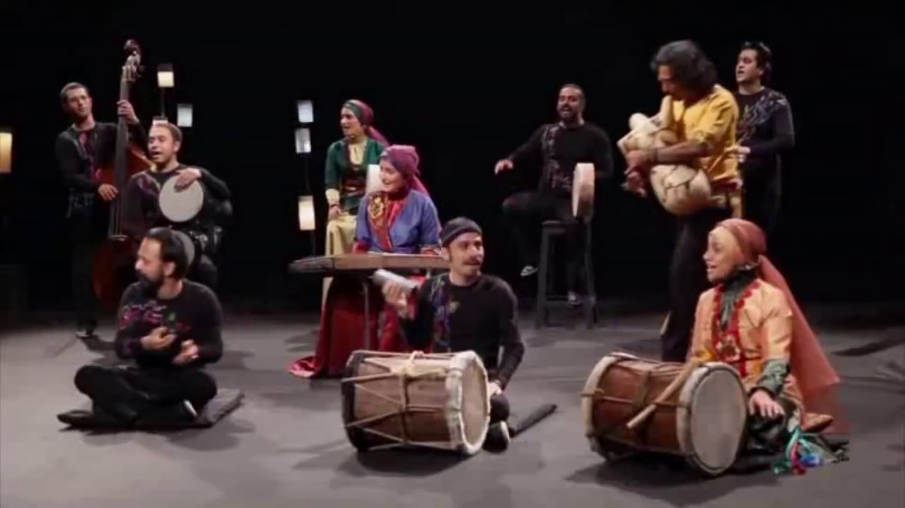

Rastak - Hele Mali |
 | Rastak-Persian dance |
Rastak Group-Baroun(Lori) |
Rastak Group-Sornaye Nowrouz |
Rastak Group - Lare ( Mazandarani ) |
We are avaiable to perform at your events weddings and parties,please Contact us for more information and booking.
|
RASTAK has performed many concerts in Iran, the UK, Austria, Germany, France, Italy, Spain, the Netherlands, Sweden, the United States, Canada, Australia, India, Japan, Malaysia, Chile, Poland, Turkey, Belgium, Georgia, Kazakhstan, Oman, Iraq, Belarus, Bangladesh and the United Arab Emirates. Rassaat hopes to play a small role in the melodious rejuvenation of Iranian regions in the colorful and diverse world of contemporary music, and to contribute to the identification of its deep roots and cultural richness. |
–